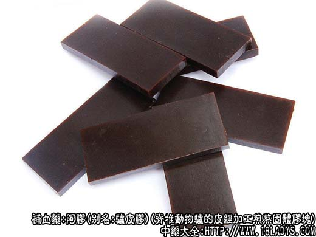

阿胶为常用中药。始载《神农本草经》，列为上品。原产山东省阿县故名阿胶。
别名：驴皮胶。
来源：为脊椎动物门奇蹄目马科动物驴的皮，经加工煎熬，使胶原水解后，再浓缩而成的固体胶块。
产地：主产于山东济南、浙江广州、上海、北京、天津等地，其他各地多有生产。
采收加工：驴皮全年均可收集，熬胶时多避开暑湿季节，每年10月至次年5月为生产季节。先将干燥的驴皮放容器中，用清水浸泡，每日换水二次，至驴皮软化，取出刮去驴毛，或用蛋白酶脱去驴毛，剁成小块，再用清水洗泡，使之白净，然后放沸水锅中稍煮片刻，待驴皮显卷缩时捞出，放入熬胶锅中，注入清水浸没驴皮，进行熬炼，共约36小时。在熬炼12小时后，即开始抽取胶汁，并随时添水继续熬炼和抽取胶汁，至胶原提净为止。抽出的胶汁用细筛过滤，滤液中加入适量白矾粉，搅拌后，静置沉淀数小时，而后取上层清液，放锅中加热浓缩，在出胶前约半小时，再加入豆油1.5kg以减少粘性，至用铲挑起放纸上不渗纸或只在铲上下垂掉落2～3片后，即粘结于铲上不再下垂为度，即可收胶。将炼好之胶取出，放于衬有铅铁皮并在铅铁皮上涂有豆油的木槽中，使其冷却凝固。凝固后取出，按照要求，切成16块，32块0.5kg的长方块。剩余的边角切成1厘米左右的胶丁，阴凉干燥即成。
性状鉴别：本品呈扁长方块状或骰状。16块胶，长约8.5厘米，宽约3.7厘米，厚1.5厘米。32块胶，厚约0.7厘米。表面棕黑色或乌黑色，平滑，有光泽，对光透视稍透明。质坚脆，易碎，断面与表面色泽一致。气微腥，味微甜。
功效与作用：补血、止血、滋阴、润燥，现已证实其作用为：
1、补血。对增加血液的红细胞数和血红蛋白量有一定帮助。其原理可能为通过氨基酸等物质的营养作用，改善全身功能（包括造血功能）。
2、止血。可能通过改善钙平衡，使血清钙略增而起作用，但仅用于出血轻症，重症无用。
3、升压。动物试验阿胶溶液注入能升高血压，对抗创伤性休克。
此外，动物实验还观察到阿胶有预防进行性肌营养障碍的作用。
炮制：捣碎生用或蛤粉炒至疏松鼓泡用。
性味：甘、平。
归经：入肺、肝、肾经。
功能：滋阴养血，补肺润燥，止血安胎。
主治：虚劳赢瘦、肺痈吐脓、吐血、衄血、便血、经血不调，崩漏带下、胎动不安、阴虚心烦、失眠等症。
临床应用：1、用于阴虚出血，油漆肺结核咯血，兼有燥咳虚热者最合适。常配生地、沙参、麦冬、茜根炭、藕节等以滋阴凉血和止血。对病情较轻，只有痰中带血、干咳燥咳者，则配牛蒡子清热，杏仁、马兜铃止咳便可，方如部肺阿胶汤。
治疗崩漏（功能性子宫出血），阿胶是常用药，常用阿胶、艾叶配四物汤作为基本方，随证配伍，有一定效果。
治便血、血痢，则用阿胶配川连。
2、用于血虚心烦（神经衰弱），有失眠，舌质红、脉细数等症状。阿胶有强壮作用，常用川连、黄芩等加强清热镇静作用，方如黄连阿胶汤。
3、用于肺燥咳嗽。阿胶能清肺润燥，对急性气管炎，表现干咳无痰，咽喉干燥者尤为合适，常配杏仁、枇杷叶、马兜铃等。
4、用于痉厥抽搐。其原理可能由于阿胶能增加血清钙浓度，有助于降低神经肌肉过高的兴奋性而抽搐。常配龟板、牡蛎、鸡子黄、生地等。
此外，阿胶珠对治疗阴虚型慢性肾炎患者的腰部酸痛、尿蛋白，也有一定帮助，可随证加入治疗方剂内。
使用注意：1、阿胶用蛤粉炒成阿胶珠后粘性减少，止血效果更好，可治虚劳咯血（肺结核咯血）和血痢。
2、阿胶腻滞不易消化，脾胃虚弱、消化不良、胸腹痞满者，服后易致呕吐和泄泻，故不宜服。
用量：3～15g，如入煎剂，去渣后溶化冲服较好。
处方举例：1、补肺阿胶汤《小儿药证直诀》：阿胶9g（溶化）、马兜铃6g、牛蒡子6g、杏仁6g、甘草3g、糯米9g，水煎服。
2、胶艾四物汤《金匮要略》：阿胶15g（溶化）、艾叶15g、当归12g、熟地15g、白芍9g、川芎9g、炙甘草3g，水煎服。
3、黄连阿胶汤《伤寒论》：黄连6g、阿胶15g（溶化）、黄芩6g，水煎，放温后入鸡蛋黄2个、搅匀，一日分三次温服。
注：据《本草纲目》记载，阿胶原为牛皮制作，后世乃用驴皮。
以上为阿胶的功效与作用的所有内容，了解更多中药的功效与作用请关注中药大全。
阿胶价格